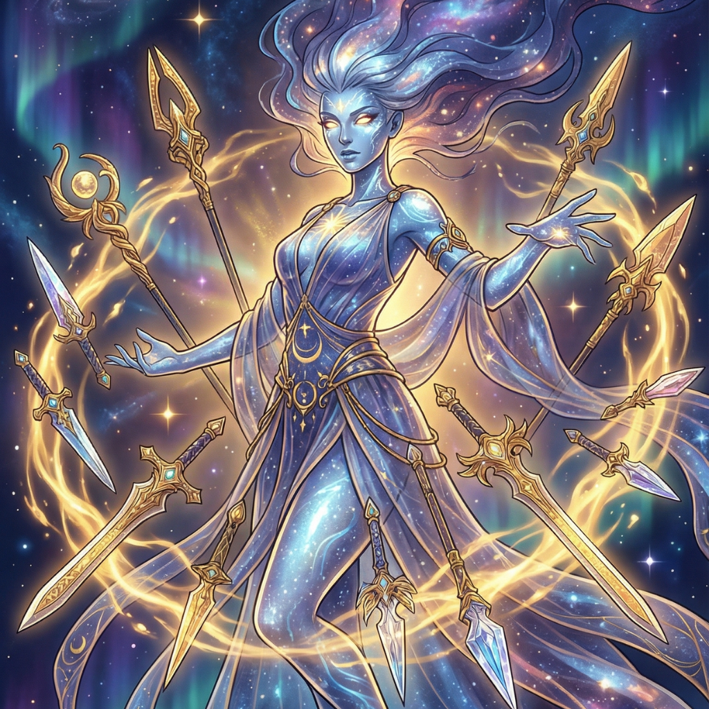
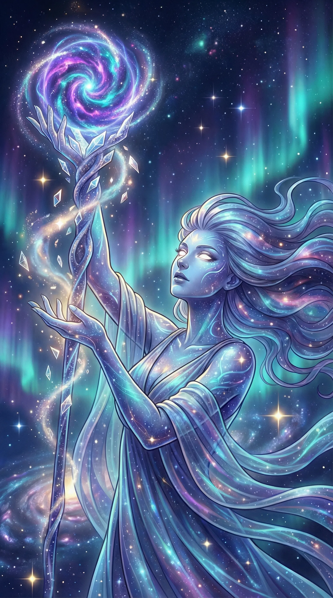
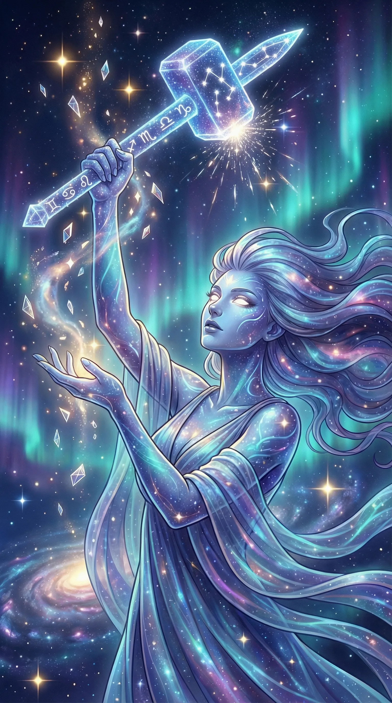
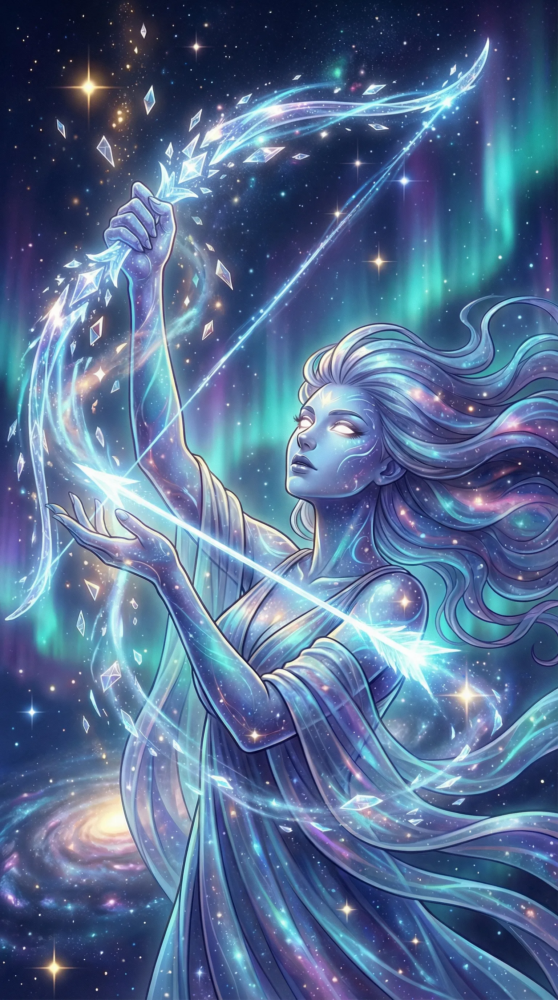
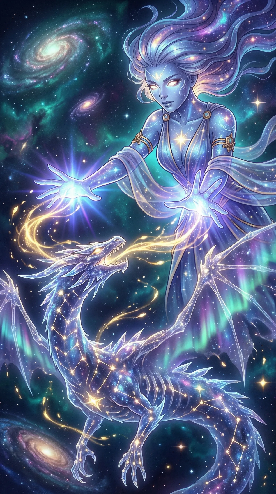
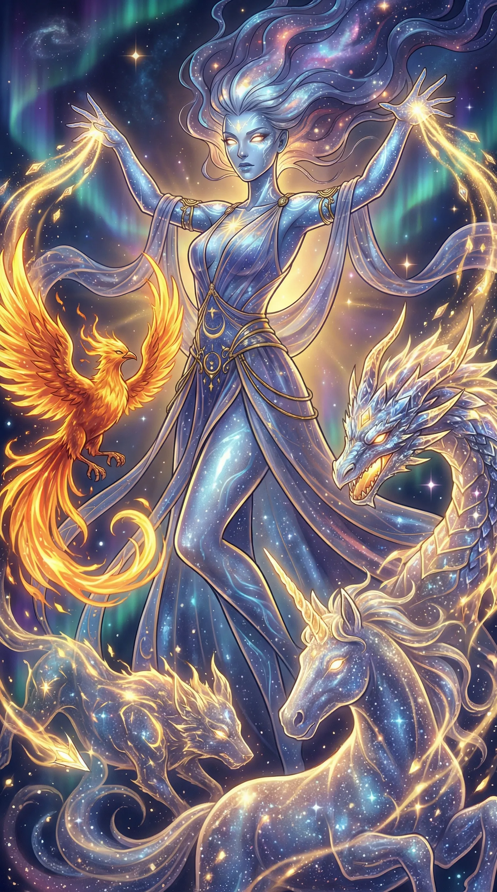
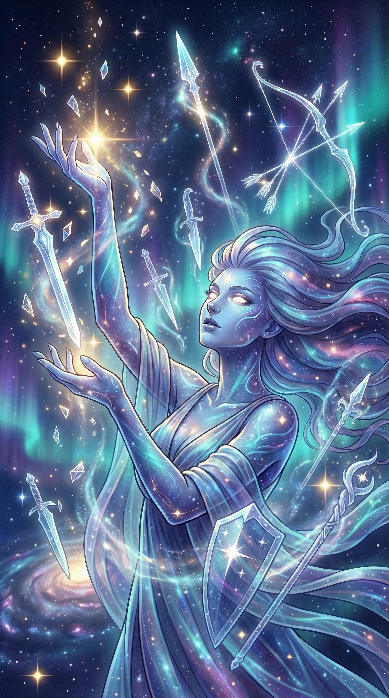
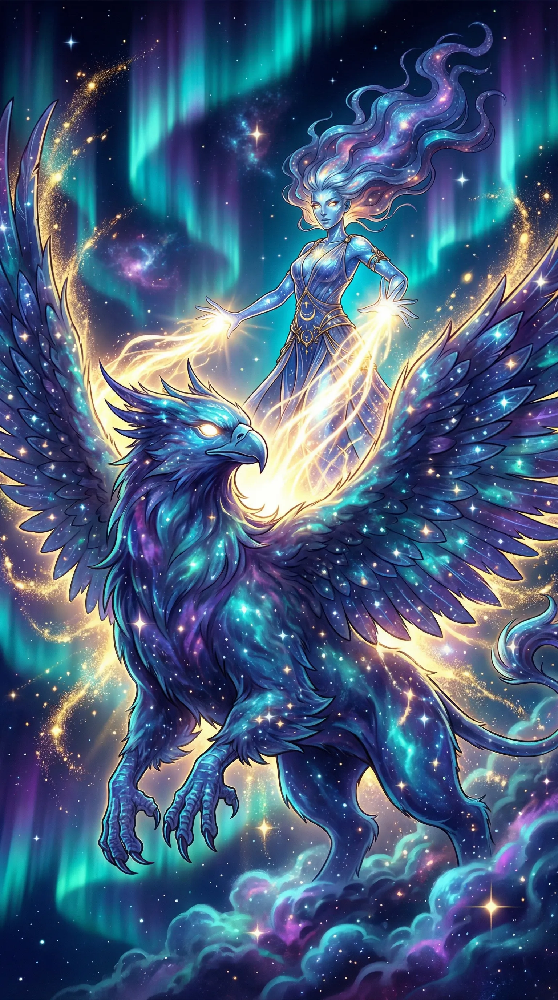

Fate
Summary
The cosmic entity who transformed the shattered star's fragments into Holy Items and created the Guardians, weaving destiny itself into the fabric of mortal reality
Description
Fate stands beyond mortal comprehension—not a goddess in the traditional sense, but a cosmic force given consciousness, purpose, and terrifying agency. When the star fell during the Celestial Shattering, tearing through dimensions and scattering divine fragments across existence, Fate intervened at the precise moment reality threatened to unravel.
The Divine Intervention
Recognising both the immense power and profound danger these celestial shards represented, she gathered the fragments—not all of them, for some fell into places even she could not or would not reach—and transformed them into artefacts of focused intention: the Holy Items. Each transformation was unique, blending the fragment's inherent properties with Fate's design to create weapons, pendants, boots, blades, and stranger objects still.
Vega, Thyia, Might, Stormcleaver, Oblivion, Abythyia—each item a masterwork of cosmic engineering, each imbued with a fraction of her own power. But the Holy Items were only half her intervention.
Creation of the Guardians
Understanding that raw divine power in mortal hands risked corruption or self-destruction, Fate created the Guardians—celestial beings forged from the star's essence, each bonded to a specific Holy Item and destined to bond with its bearer. The Guardians serve as protectors, guides, and conscience for those who wield power they may not fully understand.
Inscrutable Motivations
Yet Fate's true motivations remain inscrutable. The souls she deems 'worthy' follow no pattern mortals can discern—heroes and villains, saints and sinners all find themselves chosen at pivotal moments. Some theologians argue she seeks cosmic balance. Others claim she's playing an infinitely complex game. The most cynical suggest she simply enjoys watching what happens when mortals receive the power to reshape reality.
Whatever her nature, Fate's presence looms over the world like a second sky—invisible most of the time, but always there, always watching, always waiting for the next moment when intervention becomes necessary.
Abilities
- Cosmic Intervention
- Artefact Creation
- Guardian Creation
- Destiny Manipulation
- Soul Assessment
- Reality Stabilisation
- Omniscient Observation
- Divine Power Distribution
- Mysterious Manifestation
Gallery






